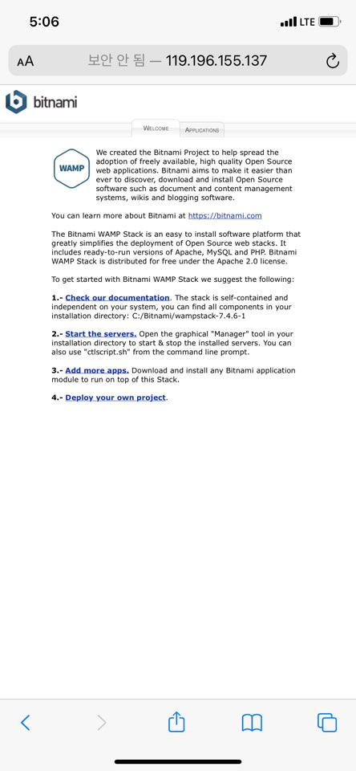

Bitnami란 무엇일까?
소프트 스퀘어드 1주차 과제는 Ubuntu 위에 APM을 컴파일 설치해 서버를 구축하는 것이었다. 2주차까지는 반복적으로 서버 구축을 하여 익숙해진다고 들었다.
이번에는 편하게 Bitnami를 이용할 것이다. 위키백과에서 bitnami 를 가상 어플라이언스 및 웹 앱, 개발 스택용 소프트웨어 패키지 및 설치 라이브러리라고 서술한다. 쉽게 말해 복잡한 과정의 어플리케이션 솔루션들을 패키지로 만들어 간단히 설치할 수 있도록 도와주는 프로그램이다. 그 중 웹 서버 구축에 필요한 Bitnami WAMP를 사용할 것이다. WAMP는 Window 환경에 Apache / MySQL / PHP를 한 번에 설치해준다.
설치 및 실행
bitnami 사이트에서 설치 후 localhost 혹은 127.0.0.1로 접속하여 아래와 같은 화면이 뜨면 정상적으로 설치된 것이다.
phpinfo 띄우기
설치한 wampstack 폴더의 apache2/htdocs/ 경로로 가면 index.html 파일을 볼 수 있다. 해당 경로가 아파치 config 파일에 root 경로로 지정되어 있어 파일을 열면 위의 이미지와 같은 화면이 출력되는 것을 확인할 수 있다.
phpinfo를 출력하기 위해 메모장을 열어 아래의 코드를 작성해보자.
<?php
phpinfo();
?>
파일 이름을 phpinfo.php로 바꾸고 해당 경로에 저장하면 localhost/phpinfo.php 에서 php 설치 정보를 보여준다.
외부에서 접속하기
위의 과정은 단순히 local server를 구축한 것이다. 하지만 이번 과제의 목표는 클라이언트와 서버를 분리하는 것이고, 외부에서 접속 가능하도록 만들어야 한다. port forwarding을 이용할 것인데 관련 내용은 이전 게시물에 정리해뒀다.
포트포워딩
cmd 창에 ipconfig 명령어를 입력하면 기본 게이트웨이 주소를 확인할 수 있다. 게이트웨이 주소로 접근하면 공유기 관리자 페이지에 접속 가능하다. 대개 iptime의 경우 로그인 이름과 암호 모두 admin으로 되어 있다.
공유기 관리자 페이지에서 간단하게 포트포워딩을 설정할 수 있다.
- 외부 포트 : 외부에서 어떤 포트로 접속하였을 때 지정된 컴퓨터로 연결할 것인지 설정
- 내부 포트 : 외부 포트에서 연결해주었을 때, 내부에서는 어떤 포트를 사용할 것인지 설정
포트포워딩 설정을 완료하면 http://[외부 IP]:[포트 번호]로 로컬 서버에 접근할 수 있다. 네이버에 내 ip 주소 확인 이라고 검색하면 외부 IP가 나온다. (참고로 방화벽은 끄고 진행해야 한다. 나는 이 과정에서 3시간 이상 삽질했다…)
접속 확인
이로써 외부 클라이언트에서 로컬 서버로의 접근이 가능해졌다. 